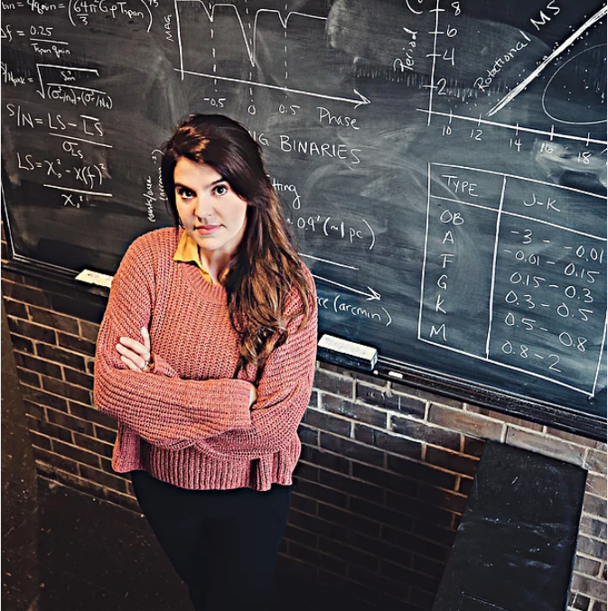
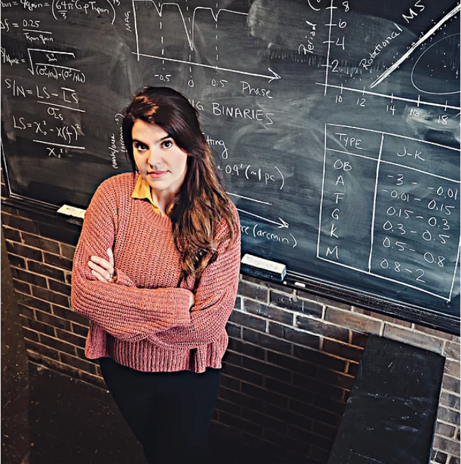

I am an astrophysicist studying stellar clusters, stars, exoplanets, and exomoons. To investigate open questions in these astrophysical subdomains, I draw insights from observational data (photometric and spectroscopic) and computational simulations. I am currently working as a NASA Hubble Postdoctoral Fellow at the University of Wisconsin-Madison and as a Science Affiliate at the MIT Kavli Institute for Astrophysics and Space Research.
I will begin a tenure-track faculty appointment in the Department of Physics and the Department of Astronomy at the University of Wisconsin-Madison in Fall 2024. On, Wisconsin!
I obtained my Bachelor's degree in physics from the University of California, Santa Cruz. In 2020, I received my Ph.D. in astrophysical sciences from Princeton University. I am a first-generation college student and the daughter of an immigrant family (migration to the US from the Povoação and Nordeste regions of São Miguel, Azores in 1966). Here, you can learn more about the history of the Azores (long considered a colony of Portugal and now an autonomous, self-governing region of Portugal). A study of the genetic make-up of the people who inhabit this remote archipelago can be found here.
My hobbies include photography and amassing a collection of rare astronomy textbooks. Our family recently adopted Murphy and Lily Belle, two energetic golden retrievers that love hiking and snacks.